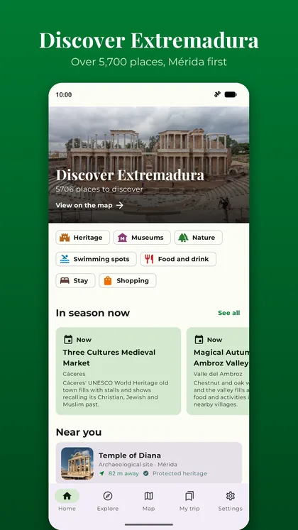
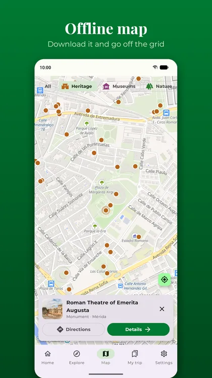
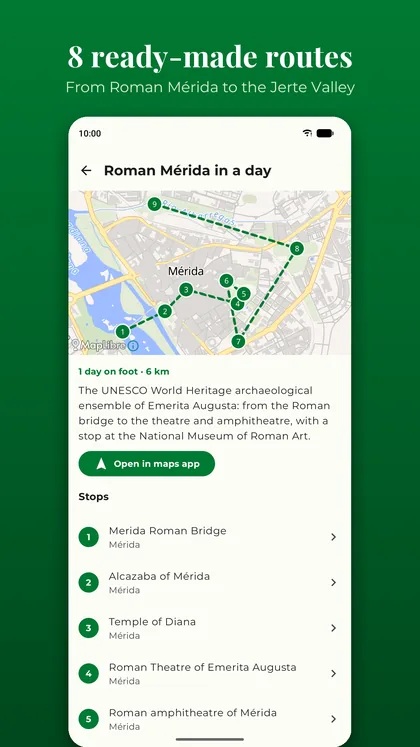
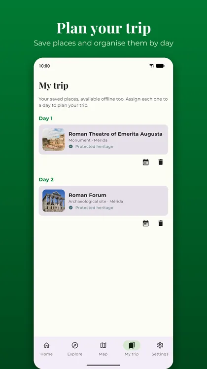
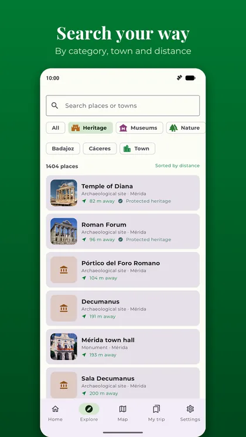

ExplorerSaga Extremadura
All of Extremadura in your pocket, even without signal.
A native Android app with more than 5,700 places across Cáceres and Badajoz, an offline vector map, 8 routes, a seasonal events agenda and a trip planner, in Spanish and English. It has no backend of its own: a Python data factory builds the content from open data and publishes it as a versioned pack on GitHub.
- 5,700+ places
- Offline map
- Free, no account
- ES / EN
The app is in closed testing on Google Play: email me your Google account and I'll give you access.

✦ What you can do
Why you'll like ExplorerSaga Extremadura
What's on, today
The home screen shows what's happening this season (cherry blossom in the Jerte Valley, the deer rut in Monfragüe, the Mérida Festival) and the places near you.

A map that won't let you down
Download the map of Extremadura, about 60 MB, and use it deep in the hills without a single bar of signal.
Everything about each place
Photo, history, opening hours, accessibility and directions. Calling or opening the website is one tap away.

8 routes ready to follow
From Roman Mérida in a day to the Jerte Valley or the Jewish quarter of Hervás, with stops on the map and directions in your maps app.

Your trip, planned by day
Save places and spread them across days. Everything stays on your phone and works offline.
Screenshots of version 2
swipe →
-
Home: categories, seasonal events and places near you. -
Vector map that can be downloaded for use without signal. -
Place page with a Commons photo, description and directions. -
One of the 8 routes, with map and stops. -
My trip: favourites organised by day, offline too. -

Explore: accent-insensitive search and filters by category, province and town. -

Seasonal agenda: festivals and nature by date.
Fancy trying ExplorerSaga Extremadura?
The app is in closed testing on Google Play: email me your Google account and I'll give you access.
{ } Under the hood
How it's built
For anyone curious about what's behind it: the problem, the architecture, real code and the decisions I made.
- places in Extremadura
- 5.700+
- map and content
- Offline
- tests
- 103
01 The problem
Tourist information about Extremadura is scattered across official sites, Wikipedia and maps, and many villages and natural areas have no signal. The first version, my final project, only covered Mérida and relied on a backend; v2 had to cover the whole region, work offline and cost nothing to run.
02 Architecture
03 A look at the code
suspend fun sync(): SyncResult = withContext(Dispatchers.IO) {
try {
val manifest = ContentImporter.json.decodeFromString<ContentManifest>(
download(baseUrl + MANIFEST).decodeToString()
)
if (manifest.schema != ContentImporter.SUPPORTED_SCHEMA) return@withContext SyncResult.UP_TO_DATE
if (manifest.version <= (dao.meta()?.version ?: 0)) return@withContext SyncResult.UP_TO_DATE
val bytes = download(baseUrl + manifest.file)
if (bytes.size.toLong() != manifest.size || ContentImporter.sha256(bytes) != manifest.sha256) {
Log.w(TAG, "Paquete descartado: tamaño o hash no coinciden")
return@withContext SyncResult.FAILED
}
importMutex.withLock {
import(ContentImporter.readPack(ByteArrayInputStream(bytes)))
}
SyncResult.UPDATED
} catch (e: IOException) {
Log.w(TAG, "No se pudo actualizar el contenido", e)
SyncResult.FAILED
} catch (e: IllegalArgumentException) {
Log.w(TAG, "Paquete de contenido no válido", e)
SyncResult.FAILED
}
}
04 What I built
- Kotlin app with Jetpack Compose (Material 3), type-safe Navigation routes, ViewModels, DataStore and Coil 3.
- Dependency-free Python 3.12 data factory that merges OpenStreetMap, Wikidata, Wikipedia, Wikimedia Commons and Extremadura regional open data. Given the same cache it produces the same pack byte for byte.
- The pack ships as a GitHub Release with a versioned manifest and its sha256. WorkManager looks for new versions every 3 days, checks size and hash before importing and keeps the user's favourites.
- Room with FTS4: accent-insensitive full-text search in both languages and by category ("museo", "castle", "farmacia").
- Vector map with MapLibre and OpenFreeMap, places clustered by area, and a downloadable Extremadura map (about 60 MB) for offline use.
- Place pages with a Commons photo plus author and licence, a Wikipedia description, opening hours and accessibility; 8 routes, "In season now", a day-by-day trip planner and nearby services with a 112 call button.
- No accounts and no trackers, with settings to clear cache and data. The v1 final project (hexagonal Spring Boot backend with PostgreSQL) is still in the repository.
- 103 tests: 26 unit and 3 UI tests on Android, 26 for the data factory and 48 for the v1 backend.
05 Decisions and why
- No server in v2. Tourist data changes slowly, so a versioned pack on GitHub Releases replaces the thesis backend: zero cost, works without signal and nothing to keep running. The trade-off is that content updates every few days, not instantly.
- Local search with Room FTS4 instead of a search API. It works in a village with no signal; accents are folded at index time so "caceres" finds "Cáceres".
- Dependency-free, reproducible Python data factory. If the same input produces the same pack byte for byte, the manifest's sha256 tells whether there is genuinely new content.
- Manual dependency injection with an AppContainer instead of Hilt. For an app this size it avoids annotation processing and keeps the dependency graph visible in one file; if the app grows, moving to Hilt is straightforward.
Transparency: the status above reflects the repository README. Anything planned is labelled as such; the full code and documentation are on GitHub.